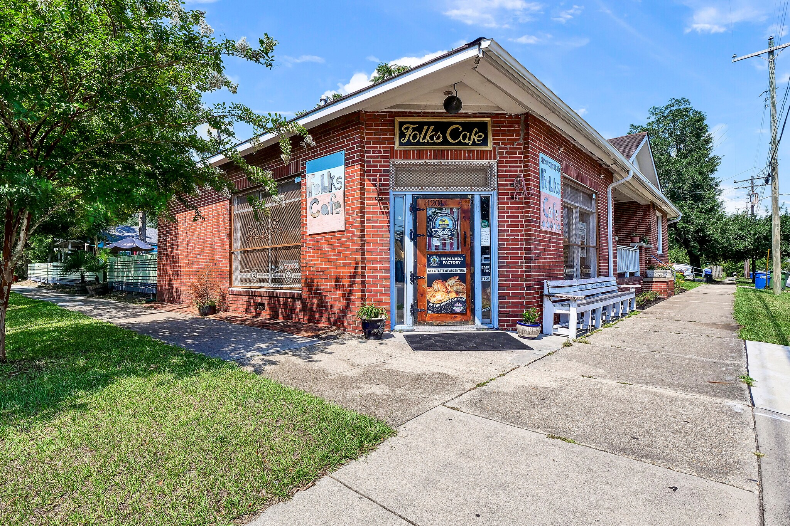
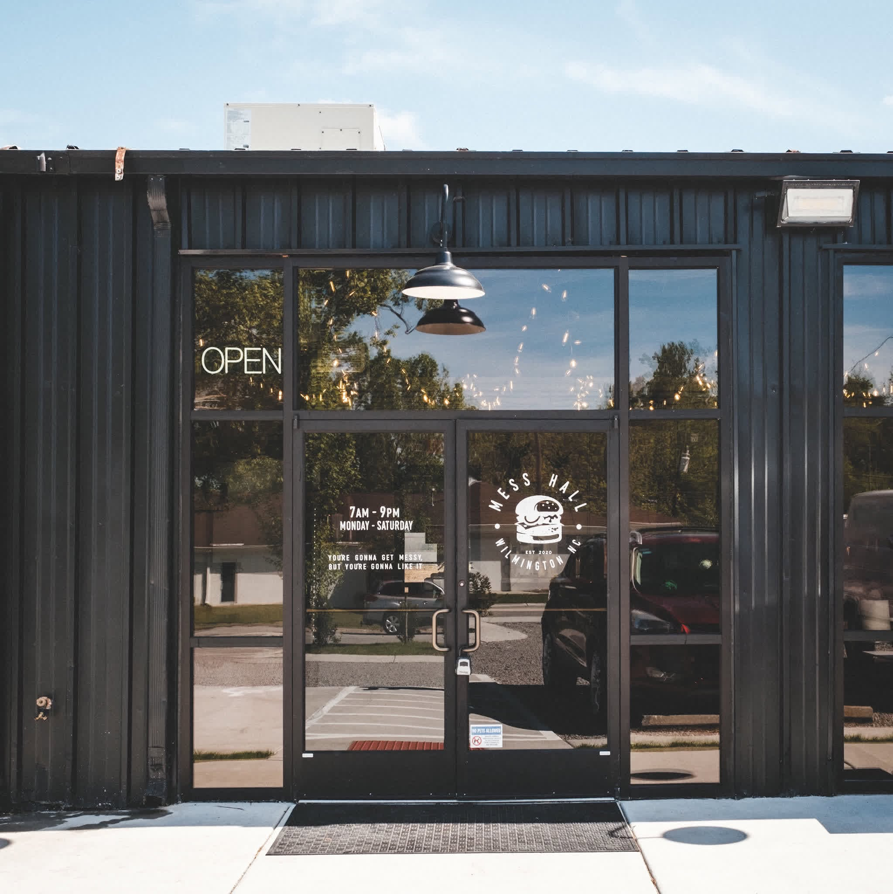
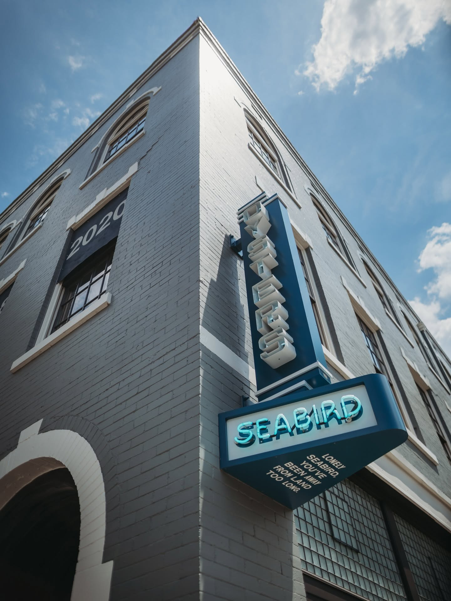
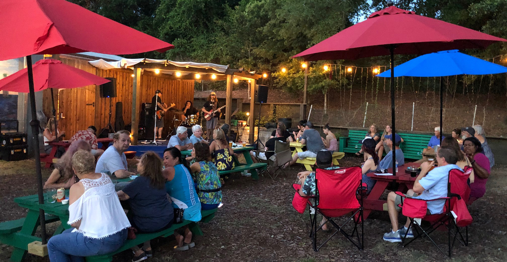

Eat & Drink
A taste of Wilmington
From morning coffee to local seafood and craft beer, Wilmington has plenty of places worth stopping for during a weekend visit.

Photo courtesy of Folks Café — FacebookCoffee & Breakfast
Folks Café
Start the day with locally roasted coffee, breakfast, baked goods, and a relaxed neighborhood atmosphere.

Photo courtesy of Mess Hall — FacebookLunch
Mess Hall
Head to the Cargo District for smash burgers, fries, and a casual local spot with an industrial atmosphere.

Photo courtesy of Seabird — FacebookDinner
Seabird
Enjoy a coastal dinner downtown featuring seafood, oysters, and ingredients inspired by North Carolina's coast.

Photo courtesy of Waterline Brewing Co. — websiteDrinks
Waterline Brewing Co.
Grab a local beer and relax in the outdoor beer garden at this brewery beneath the Cape Fear Memorial Bridge.